Authorized Saint-Gobain Dealer
Gandichowk, Khammam · Near Munneru Bridge · Since 1999
Glass, Rexine & Vehicle Care — Your Trusted Stop in Khammam
A leading name for Car Glass Repair & Services and complete automotive care — from routine maintenance to major repairs — keeping your vehicle safe and roadworthy.
Skilled mechanics, clear communication, and a customer-first atmosphere. We stock glasses, rexines, body materials, beading, zinc sheets, and genuine parts as authorized Saint-Gobain & AIS dealers.
All kinds of vehicle glasses
Rexines and body building materials
Rubber beading, aluminum beading, zinc sheets
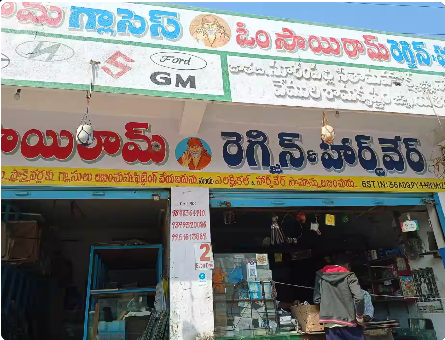
Since 1999
Trusted local service center
Authorized Dealers
Saint-Gobain & AIS
Working Hours
Mon-Sun: 9:00 AM - 8:30 PM
Authorized Dealers
Officially associated with leading automotive glass brands
Authorized AIS Dealer
What we offer
One-stop shop for glass, rexine & full vehicle care
Specialists in all kinds of glasses, rexines, bus and lorry body building materials, rubber and aluminum beading, and zinc sheets — plus complete mechanical work when your vehicle needs more than glass.
Car Glass & Windscreens
- Front, side & rear glass
- Repair & replacement
- Genuine Saint-Gobain & AIS supply
Maintenance & Repairs
- Oil changes & routine service
- Brake repairs & engine diagnostics
- Major repairs & complete overhauls
Rexine & Body Materials
- Rexines for interiors & seating
- Bus & lorry body building materials
- Zinc sheets for body work
Beading & All Vehicles
- Rubber & aluminum beading
- Hardware & fitting supplies
- Cars, buses & lorries / trucks
Why choose us
Expert care, modern standards, people who listen
Knowledgeable staff, timely service, and high-quality automotive solutions — built on trust since 1999.
Skilled team
Experienced mechanics and technicians who handle everything from daily checks to complex repairs.
Right equipment
Professional tools and processes so diagnostics and repairs are done properly the first time.
Customer-first
Clear explanations, friendly atmosphere, and service that respects your time and budget.
Safe & roadworthy
We focus on keeping your car or commercial vehicle fit for the road — glass, body, and mechanics.
About
Khammam’s trusted name for glass & vehicle care
Om Sai Ram Glasses Rexin And Hardware is a renowned automobile repair and service centre at Gandichowk, Khammam, near Munneru Bridge. Since 1999, we have built a reputation for expert vehicle maintenance and a welcoming, professional atmosphere.
Rated 5.0 stars on Google, we are known especially for Car Glass Repair & Services, while also offering oil changes, brake work, engine diagnostics, and complete overhauls — for private cars and commercial fleets alike.
We are authorized Saint-Gobain and AIS dealers, with practical advice by phone or WhatsApp and a team that believes in clear communication and timely service.
At a glance
- Established 1999 · Open daily 9:00 AM – 8:30 PM
- Car glass specialist + full mechanical support
- Genuine glass brands & quality parts mindset
- Easy reach: call, WhatsApp, or walk in
Gallery
See our shop before you visit
Real photos of our storefront, glass stock, and workspace — so you know what to expect.
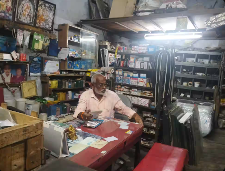
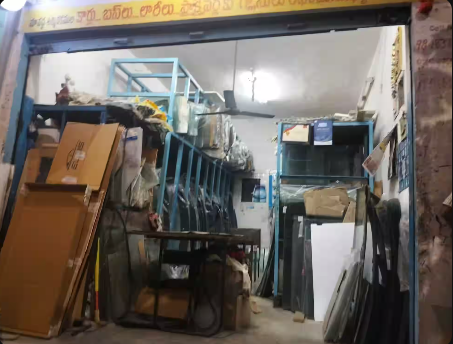
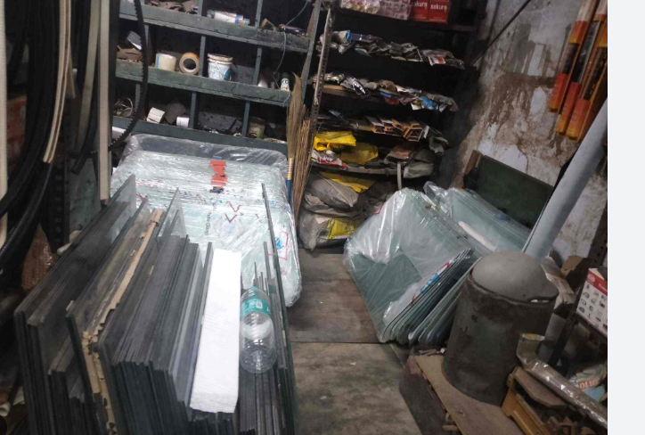
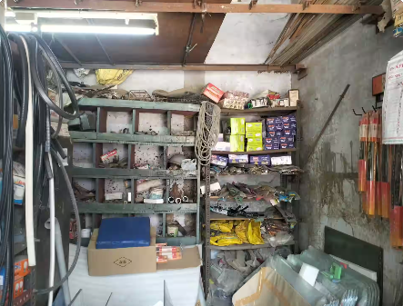
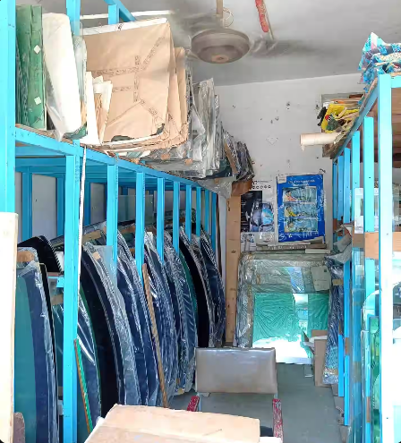
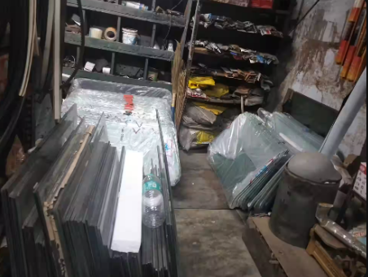
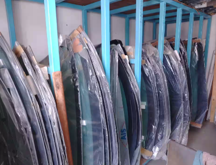
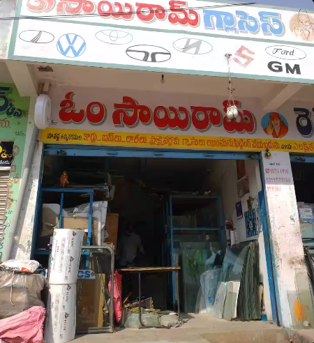
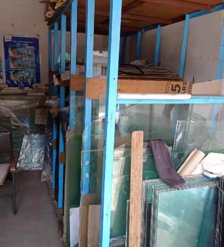
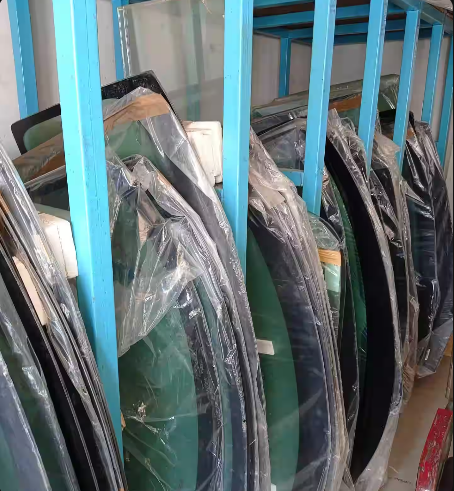
Contact
Call, WhatsApp, or visit the shop
Phone: +91 96181 64910
WhatsApp: Chat on WhatsApp
Address: Near Munneru Bridge, Gandichowk, Khammam, Telangana - 507001
Hours: Monday – Sunday: 9:00 AM – 8:30 PM
Map: Open in Google Maps
Google Reviews: Read customer reviews